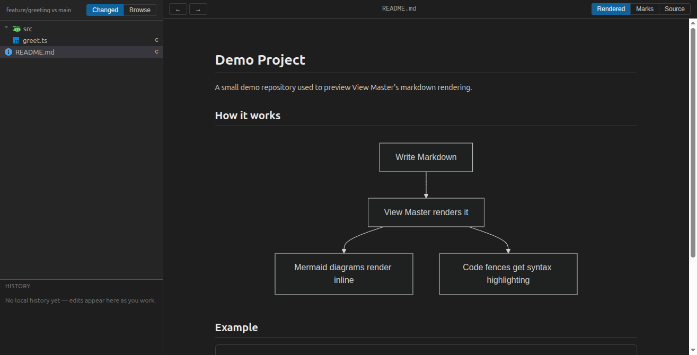
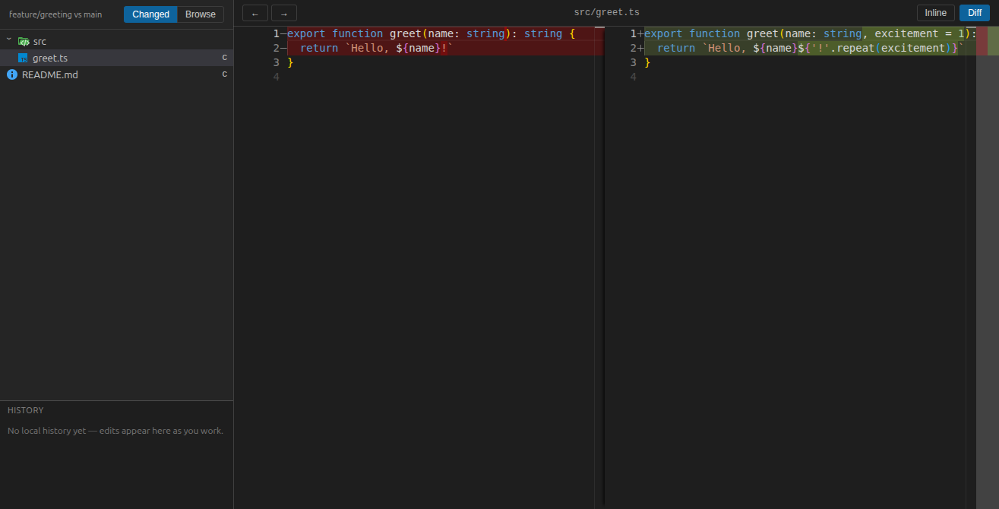
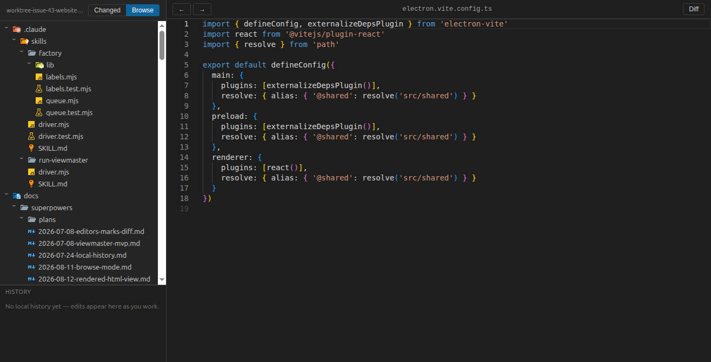

Markdown viewing
Beautifully rendered markdown with inline Mermaid diagrams, syntax-highlighted code fences, and in-app navigation between linked documents.
A read-only desktop viewer for markdown documents, images, PDFs, and branch diffs.
View on GitHubBuilt to replace reaching for a full IDE just to read a rendered markdown file, preview an image or PDF, or eyeball what changed on a branch. View Master only ever views — it never edits your files.
Beautifully rendered markdown with inline Mermaid diagrams, syntax-highlighted code fences, and in-app navigation between linked documents.
Click an image or PDF to see it rendered instantly — no other app required.
Sandboxed rendered previews of HTML files, with a Code and Diff toggle and one click to open in your default browser.
See exactly what a branch changed — side-by-side diffs, or changes shown as proofreader's marks right in the rendered document.
Find in Files, Go to Definition, Find Usages, and Related Files — all without leaving the viewer.


